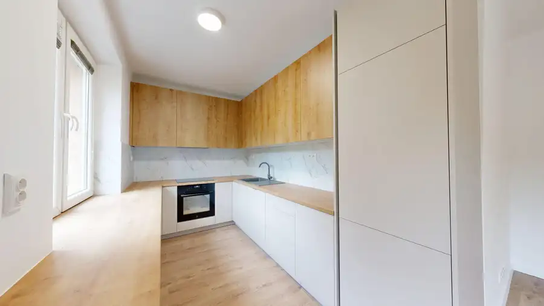
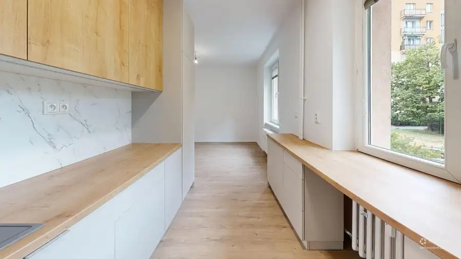
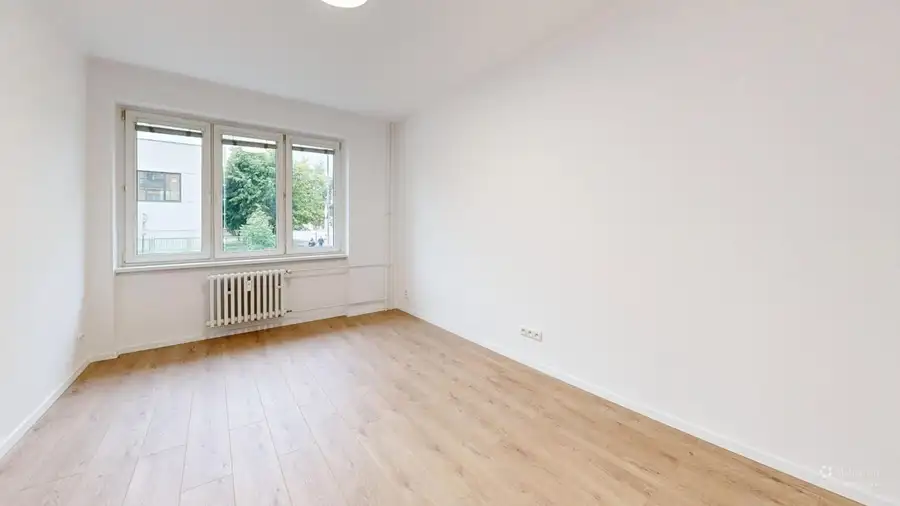
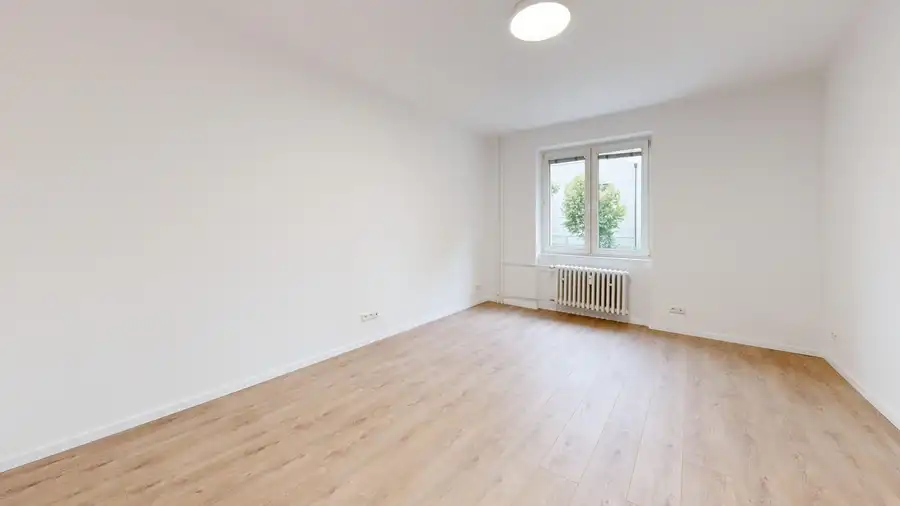
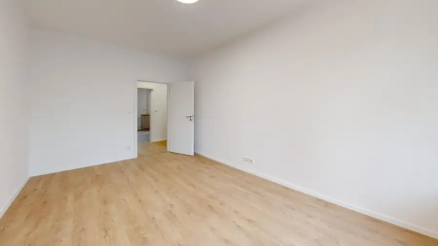
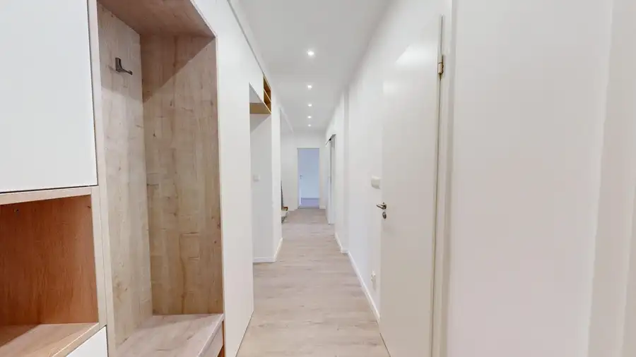
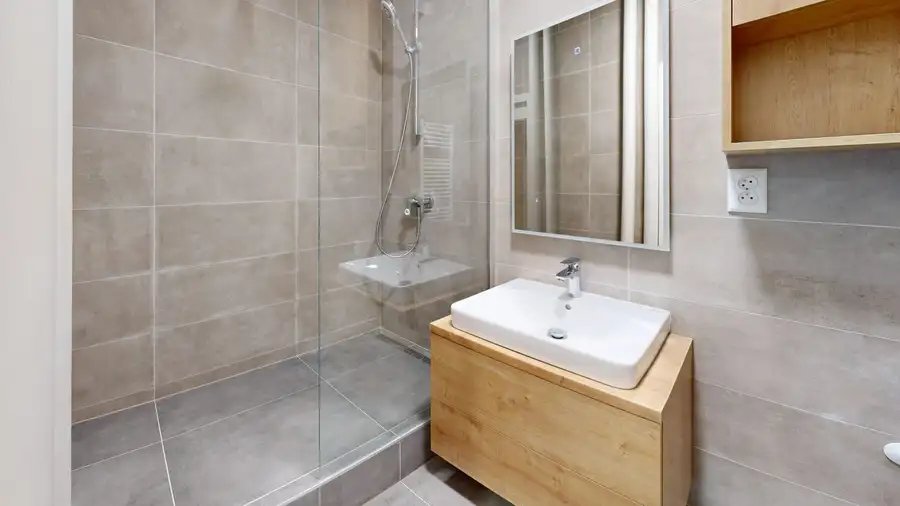

AZ. 3.5-izbový byt s modernou rekonštrukciou na kľúč
Ružinov, Bratislava







- Dispozícia3-izbový
- Plocha81 m²
- Poschodie1. z 4
- StavKompletná rekonštrukcia
- VlastníctvoOsobné
O nehnuteľnosti
Ponúkame na predaj priestranný a kompletne zrekonštruovaný 3+1 byt v jednej z najvyhľadávanejších lokalít Bratislavy — Ružinov, Drieňová ulica.Byt s rozlohou 81 m² sa nachádza na 1. poschodí zatepleného panelového bytového domu. Súčasťou bytu je pivnica s rozlohou 3,5 m².Byt prešiel kompletnou rekonštrukciou — nové elektrické rozvody, internetové pripojenie v každej izbe, vodeodolná laminátová podlaha v celom byte, bezpečnostné vstupné dvere a kvalitné interiérové dvere. Predsieň aj jedna izba sú vybavené vstavaným úložným priestorom na mieru.Kuchyňa je riešená na mieru so vstavanými spotrebičmi vrátane indukčnej varnej dosky (400V). Kúpeľňa je moderná so sprchovým kútom a samostatným WC.Bytový dom je zateplený, so zrekonštruovanými spoločnými priestormi, pivnicami aj vchodom. Okolie domu je udržiavané a prostredie pokojné.Byt je pripravený na okamžité nasťahovanie — bez potreby ďalších investícií.Cena: 349 900 €Dispozícia: * Kuchyňa + obývačka: 20,37 m² * Izba 1: 18,17 m² * Izba 2: 15,12 m² * Izba 3: 9,56 m² * Chodba: 10,00 m² * Kúpeľňa: 3,63 m² * WC: 0,70 m² * Pivnica: 3,50 m² * Celková úžitková plocha: 81 m²Lokalita:Drieňová ulica patrí medzi stabilné a vyhľadávané adresy v Ružinove. V pešej dostupnosti sa nachádzajú školy, škôlky, detské ihriská, obchody a služby. Jazero Štrkovecké jazero je dostupné peši — ideálne pre rodiny s deťmi aj aktívnych ľudí. Parkovanie je zabezpečené v rámci rezidentskej zóny PAAS.----------------------------------------📞 Atila Baka | Andel & Zachar 📱 0907 099 742 📧 baka@andelzachar.sk
Parametre
- Cena vrátane energií
- Nie
- Druh
- 3 izbový byt
- Dátum zverejnenia
- 04. 06. 2026
- Energetický certifikát budovy
- nie je
- Orientácia
- Južná
- Podlažie
- 1
- Počet izieb / miestností
- 3
- Počet nadzemných podlaží
- 4
- Rok výstavby
- 1970
- Stav nehnuteľnosti
- Kompletná rekonštrukcia
- Telekomunikácie
- Optická sieť
- Typ
- Predaj
- Typ konštrukcie
- Panelová
- Umiestnenie
- Zvýšené prízemie
- Vlastníctvo
- Osobné
- Úžitková plocha
- 81 m²